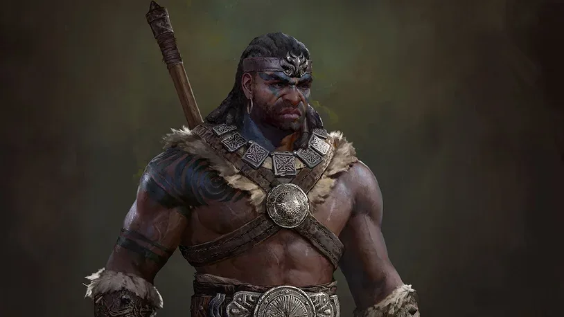
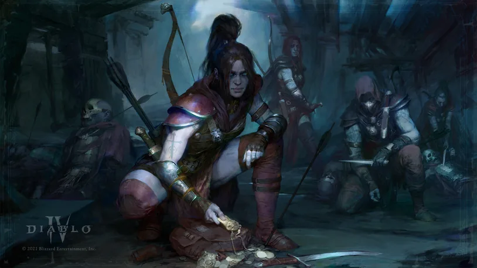
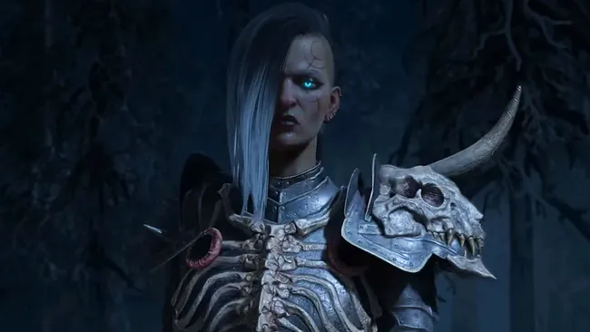
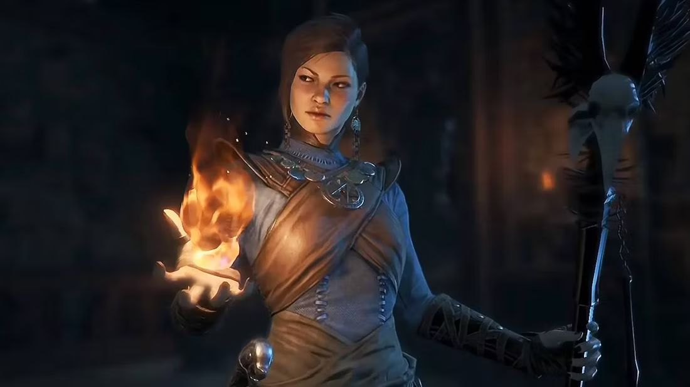
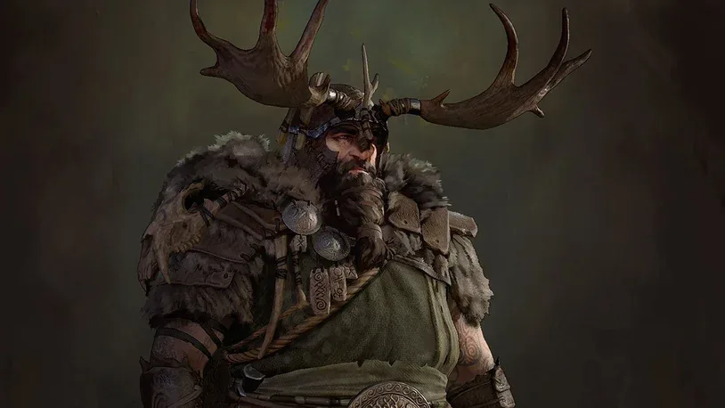

Bárbaro
Bárbaros são para jogadores que gostam de brigas de ritmo acelerado e de perto, preferindo pular no meio da batalha e usar ataques corpo a corpo avassaladores para golpear, rasgar ou esmurrar tudo ao seu alcance. Sua capacidade de lidar com ameaças à distância é bastante limitada em comparação com a maioria das classes e pode ser facilmente sobrecarregada se suas habilidades não forem efetivamente utilizadas para eliminar grandes grupos.
Os Bárbaros usam suas habilidades básicas para gerar Fúria, que é então usada para acionar habilidades essenciais para causar danos incríveis, e podem complementá-los com algumas habilidades defensivas para aumentar sua capacidade de sobrevivência no meio da batalha. Suas habilidades finais podem transformar os bárbaros em monstros imparáveis, convocar heróis antigos ao lado deles ou utilizar todas as armas de seu arsenal de uma só vez.

Renegado
São uma ótima escolha para aqueles que valorizam subterfúgios e enganos, contando com armadilhas, venenos e as próprias sombras para desviar e atrapalhar os inimigos a cada passo antes de acertá-los com ataques letais. Eles carecem da robustez de outras classes orientadas para corpo a corpo e devem contar com o uso cuidadoso de habilidades suplementares e mobilidade para evitar serem sobrecarregados e nunca devem ficar parados por muito tempo.
Cada uma das habilidades básicas dos Renegados, seja à distância ou corpo a corpo, gera energia, que pode ser gasta em habilidades básicas para queimar rapidamente os inimigos com uma enxurrada de ataques que podem revelar vulnerabilidades nos inimigos, permitindo causar ainda mais dano, enquanto agilidade e subterfúgio adicionais as habilidades podem ser usadas para ultrapassar ou manobrar os inimigos. Suas habilidades finais podem convocar sombras para lutar ao lado ou causar grandes danos a inimigos pegos em uma área específica com armadilhas ou flechas.

Necromante
O Necromante é uma escolha que vale a pena para aqueles que gostam de um estilo de jogo desafiador e pouco ortodoxo. Enquanto é capaz de usar especializações para lutar sozinho, um componente-chave da classe é ser capaz de levantar um exército para lutar ao seu lado com diferentes especializações e debilitar os inimigos para acelerar sua morte. Por conta própria, no entanto, os Necromantes podem ser facilmente atacados e têm habilidades defensivas limitadas.
Os Necromantes têm dois recursos principais: essência que se regenera lentamente e é usada para fortalecer a maioria das habilidades básicas, e cadáveres que vêm dos mortos ou gerados por habilidades. Suas habilidades principais giram em torno do uso de feitiços de ossos para gerar lanças e paredes defensivas, feitiços de escuridão para amaldiçoar e debilitar inimigos, feitiços de sangue para aumentar a sobrevivência e o sacrifício e habilidades de convocação para gerar um exército personalizável de mortos.

Mago
Os Magos são uma escolha adequada para aqueles que preferem as artes mágicas, bem como um personagem de alto risco e alta recompensa. Eles podem causar danos tremendos à distância e destruir demônios sem nunca chegar perto, mas precisarão controlar cuidadosamente o campo de batalha para evitar danos devido à sua baixa saúde e armadura.
Embora seus feitiços básicos não tenham custos, o Mago exigirá mana para liberar suas habilidades principais, que se regeneram com o tempo. Dependendo de suas especializações, podem sumonar raios para deixar para trás energia crepitante para restaurar mana rapidamente, ou explodir inimigos com gelo para retardar e eventualmente congelar os oponentes, ou até mesmo invocar meteoros ou hidras que cospem fogo para queimar demônios ao longo do tempo. Suas habilidades finais podem incendiar uma área em um inferno rodopiante, selar o Mago em um congelamento protetor ou desencadear uma torrente de diferentes ataques baseados em raios.

Druída
Os Druidas são uma ótima classe para aqueles que preferem um estilo de jogo híbrido, misturando dano corpo a corpo com ataques elementais à distância para enfrentar uma variedade de ameaças. Eles podem trocar para a forma Werebear para absorver danos com maior resiliência, ou para uma forma Werewolf para uma rápida produção de dano.
O Druida pode aprimorar seus ataques com fortaleza elementar, permitindo que seus ataques causem efeitos adicionais dependendo do elemento. No entanto, sua mudança de forma tem certos limites, pois eles terão apenas alguns momentos para liberar habilidades específicas antes de retornar à forma humana. No entanto, eles também podem reforçar suas habilidades de sobrevivência convocando outros animais para ajudá-los no combate.